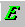

| Style Menu Command | Keyboard Shortcut | Related button | |||
| Emphasis (em) | Shift Ctrl + I |  | |||
| Strong | Shift Ctrl + B |  |
|||
| Cite | Alt + t Alt + w |
||||
| Definition (dfn) | Alt + t Alt + d |
||||
| Code | Alt + t Alt + c |
||||
| Variable (var) | Alt + t Alt + v |
||||
| Sample (samp) | Alt + t Alt + s |
||||
| Keyboard (kbd) | Alt + t Alt + k |
||||
| Abbreviation (abbr) | Alt + t Alt + a |
||||
| Acronym | Alt + t Alt + z |
||||
| Insertion (ins) | Alt + t Alt + i |
||||
| Deletion (del) | Alt + t Alt + delete |
Note: The attributes of all style commands attributed to any character string are removed when you highlight that text and re-select the style commands.